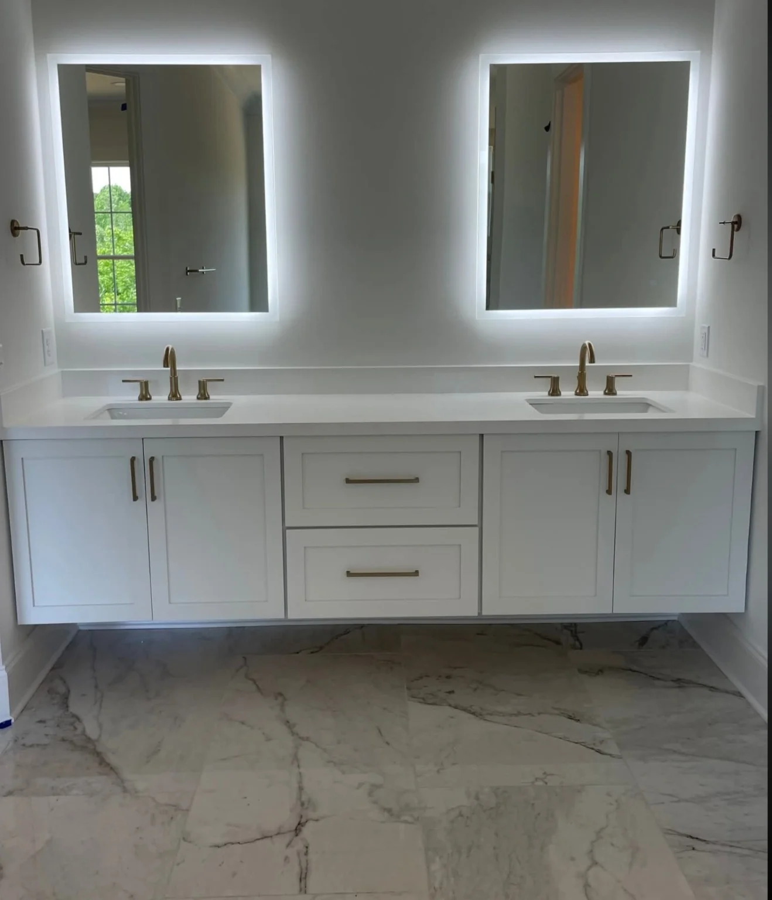

DOOR STYLES
Wood doors & finishes
Selected Fabuwood doors use solid wood frames and wood-veneered center panels; other styles use engineered centers or contemporary surfaces. We review the actual door specification.
CABINET LINES
Fabuwood cabinet lines give kitchens and baths a broad range of looks, proven configurations and genuine wood construction options—without making every cabinet from scratch.
FABUWOOD OPTIONS
Prefabricated does not mean disposable—or second best. A thoughtfully chosen cabinet line can deliver substantial materials and an impressive finished room. With skilled planning and installation, you can put your budget toward visible quality rather than fabrication time you may not need.
Fabuwood offers real wood construction in several lines: Allure includes solid wood face frames and dovetail drawers, while Allure and Ovela feature plywood boxes. Door materials and finishes vary with the style.
We begin with your layout, explore suitable sizes and finishes, and determine which details may need modification or custom work.
Product specifications and availability must be confirmed by series. Manufacturer imagery is not presented as T-Squared project work.
BATHROOM VANITIES

Fabuwood offers vanity configurations, door styles and finishes. Check available widths, cabinet details and top compatibility by model.
Standard sizes suit many bathrooms. Nonstandard openings may call for custom construction.
View the manufacturer's vanitiesTROY Photograph: project vanity example from T-Squared's supplied collection, not labeled as a Fabuwood product.
PRODUCT SPECIFICATIONS
Genuine wood is available throughout important Fabuwood construction options. The useful question is which wood components, box construction and finish come with the exact door style and series you select.
DOOR STYLES
Selected Fabuwood doors use solid wood frames and wood-veneered center panels; other styles use engineered centers or contemporary surfaces. We review the actual door specification.
BOX CONSTRUCTION
Allure and Ovela offer plywood construction with natural wood veneer interiors; other lines may use furniture board. Choose based on the intended room and requirements.
DRAWERS & FIT
Solid wood dovetail drawers are offered in lines including Allure and Ovela. Hinges, slide systems, alignment and careful installation complete the experience.
Materials, finishes and availability depend on the selected series and door style. We confirm this during planning; no particular species is guaranteed across the Fabuwood range.
WHICH BUILD MAKES SENSE?
Best for unusual dimensions, exact historic matches, special built-ins and details that standard sizes cannot handle.
Often a strong first option for kitchens and baths: coordinated styles, established construction, genuine wood options in selected lines and more room in the budget for the finishes and details you value.
PROJECT INQUIRIES
We can walk through Fabuwood styles, construction and pricing considerations, then optionally identify the few details that would truly benefit from custom work. Beautiful results should be possible at more than one price point.